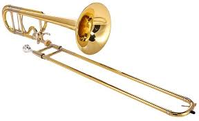

In grade school I played the Trombone for 6 years through Middle School and High School, and it was because of the band program at school that I became so interested in music.
While volunteering at church in High School, I started to work with the praise and worship team and started to learn how to play the Bass Guitar and Drums.
I really had fun on the drums so the leader of the team allowed me to audition for the position of drummer and I managed to impress him enough to get the position.
Ever sense joining the Marine Corps I haven't had the time or resources to pick up any of the instruments I learned, but my enthusiasm for the art has only grown.
My project history started while participating in the Microsoft Software and Systems Academy (MSSA) and for the most part is class projects that focus on fundamental programming concepts and skills.
That being said, on my Personal github page, I do have extra projects that I have been creating outside of the class in an attempt to better my understanding of the programming languages.
Comment fields
Button fields
Escape Characters
The following groups of characters are used within html to do various things. They all begin with the "&" character, however, I cannot include it with the example because then they would not show up properly. All of the character groups can be ended with a ";" to separate.
Space: "nbsp"
TM: "#8482
&: "amp"
CopyRight: "copy"
<: "lt"
>: "gt"
?: "#63"
Bold and Italic elements
This is a bold element.
This is a strong element.
This is an italic element.
This is an emphasis element.
This is a Combination of elements.
IFrame Section
This section will switch between the two pictures presented earlier on the page.